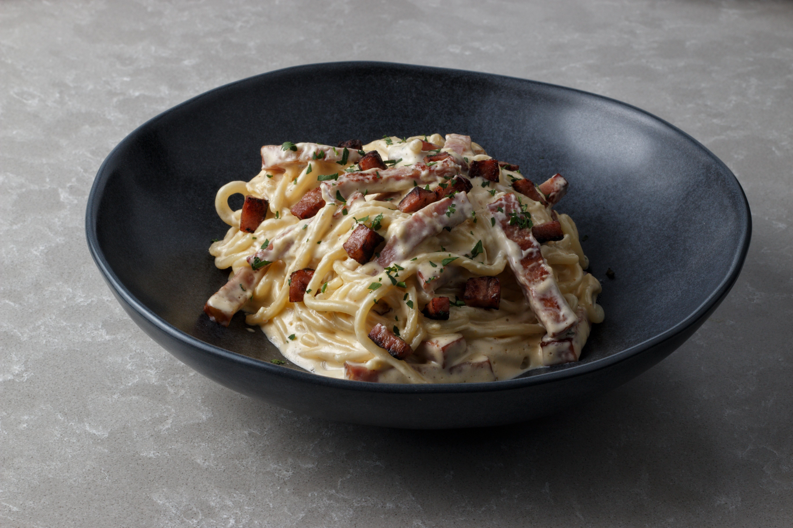
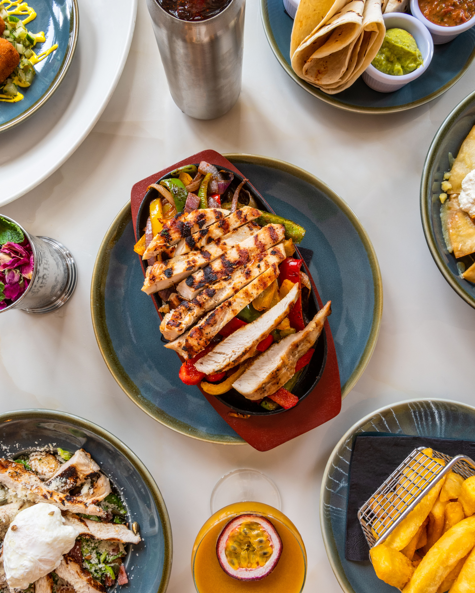
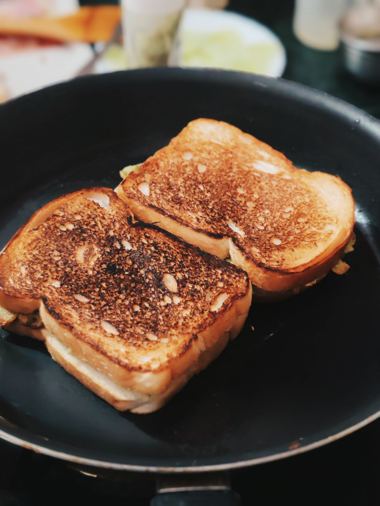

fausses carbo
15 min
- Pâtes
- Lardons
- Crème
- Parmesan
Préparation
Faire cuire les pâtes. Faire revenir les lardons, ajouter la crème puis mélanger avec les pâtes.

fajitas
10 min
- galettes
- viande hache
- Salade
- Sauce
- épices
Préparation
Faire la viandes mettre tous les ingrédients dans le wrap et rouler.

croque monsieur
2 min
- pain
- jambon
- fromage
Préparation
Placer le fromage et le jambon entre 2 tranches de pain. mettre 1 min au toaster.

Gâteau au chocolat dans une tasse
2 min
- farine
- sucre
- cacao
- lait
- huile
Préparation
mélange tout dans une grande tasse compatible micro-ondes. Fais cuire environ 60 à 90 secondes, en surveillant la cuisson. Laisse tiédir avant de manger.
toast oeufs brouillés
10 min
- oeufs
- pain
- frommage
Préparation
battre les œufs, les cuires doucement à la poêle en remuant, ajouter le fromage et poser le tout sur du pain grillé.